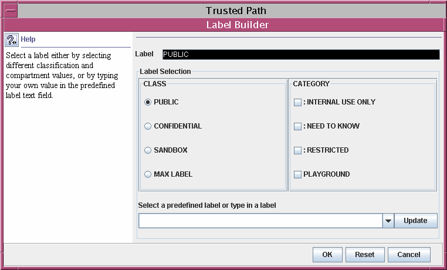
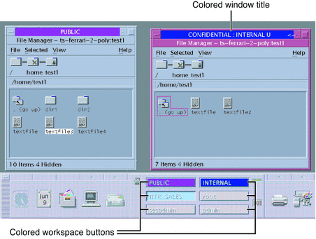

|
|||
|
1. Labels in Trusted Extensions Software 3. Making a Label Encodings File (Tasks) 4. Labeling Printer Output (Tasks) 5. Customizing LOCAL DEFINITIONS Modifying Sun Extensions (Task Map) How to Specify Default User Labels How to Assign a Color to a Label or Word How to Name Column Headers in Label Builders 6. Example: Planning an Organization's Labels |
LOCAL DEFINITIONS SectionSun provides additional keywords that are not defined in the government-furnished Compartmented Mode Workstation Labeling: Encodings Format. The Sun keyword extensions are in a LOCAL DEFINITIONS section. *
* Local site definitions and locally configurable options.
*
LOCAL DEFINITIONS:
Classification Name= Classification;
Compartments Name= Sensitivity;
Default User Sensitivity Label= PUB;
Default User Clearance= CNF NEED TO KNOW;
COLOR NAMES:
label= Admin_Low; color= #bdbdbd;
label= PUB; color= blue violet;
label= SBX PLAYGROUND; color= yellow;
label= CNF; color= navy blue;
label= CNF : INTERNAL USE ONLY; color= blue;
label= CNF : NEED TO KNOW; color= #00bfff;
label= CNF : RESTRICTED; color= #87ceff;
label= Admin_High; color= #636363;
*
* End of local site definitions
*
Contents of LOCAL DEFINITIONS SectionThe Security Administrator role can do the following in the LOCAL DEFINITIONS section:
For more details on the extensions to the label encodings keywords that Trusted Extensions provides, see the label_encodings(4) man page. Changing Column Headers on Label BuildersThe following figure shows the column headers Classification and Category in the label builder that is displayed by the Solaris Management Console. Figure 5-1 Column Headers on Label BuilderTo change the column headers, see How to Name Column Headers in Label Builders. Specifying Colors for LabelsIn the LOCAL DEFINITIONS section, the COLOR NAMES keyword is followed by zero or more color assignments. If no color is defined for a classification in the COLOR NAMES section of the label_encodings file, the color black is used. The default color values are shown in the following excerpt. COLOR NAMES:
label= Admin_Low; color= #bdbdbd;
label= PUB; color= blue violet;
label= SBX PLAYGROUND; color= yellow;
label= CNF; color= navy blue;
label= CNF : INTERNAL USE ONLY; color= blue;
label= CNF : NEED TO KNOW; color= #00bfff;
label= CNF : RESTRICTED; color= #87ceff;
label= Admin_High; color= #636363;Colors are assigned to labels and to words within labels with the following syntax: label= label-name; color= color-name; word= label-name; color= color-name; The value of color-name can be either a text color name or a hexadecimal color value. The color is associated with a word or a label. The color that is assigned to a label's component displays as a background color whenever a label includes the specified label components. The windows software computes a complementary color for the lettering. For an introduction to color values, see Color Values. A full discussion of how to specify color is outside the scope of this guide. For more information, see the X11(5) man page in the /usr/openwin/share/man directory. For a fuller description, see “Color Specification” in the O`Reilly and Associates, Inc. XWindows Systems User's Guide (Vol. III), ISBN number 0-937175-29-3. Color is assigned to a label's components according to the ordering rules that are described in the following section. For a desktop example of color use, see Figure 5-2. The PUBLIC, INTERNAL, and NTK_SALES workspace buttons are colored differently from each other and from standard workspace buttons. Figure 5-2 Window Labels With Colors from COLOR NAMESOrder of Color SpecificationThe color that is used for any label is determined according to the following rules.
In this example, a system has the following color definitions: label= u; color= green label= c; color= blue label= S; color= red; word= B; color= orange; label= TS; color= yellow; label= TS SA; color= khaki; The rules result in the following color display:
This example illustrates rule 4. The label TS displays the color khaki, because TS SA is the only label that includes the TS classification. TS SA is defined to display the color khaki. label= u; color= green
label= c; color= blue
label= S; color= red;
word= B; color= orange;
label= TS SA; color= khaki;
Color ValuesThe /usr/openwin/lib/rgb.txt database translates color names into red, green, blue values. You can refer to the rgb.txt file for color names to use for your site's labels. You can also use hexadecimal color values. Briefly, here are a few high-level points about color values:
For a sample color name planner, see Table 6-8. To assign colors, see How to Assign a Color to a Label or Word. |
||
|